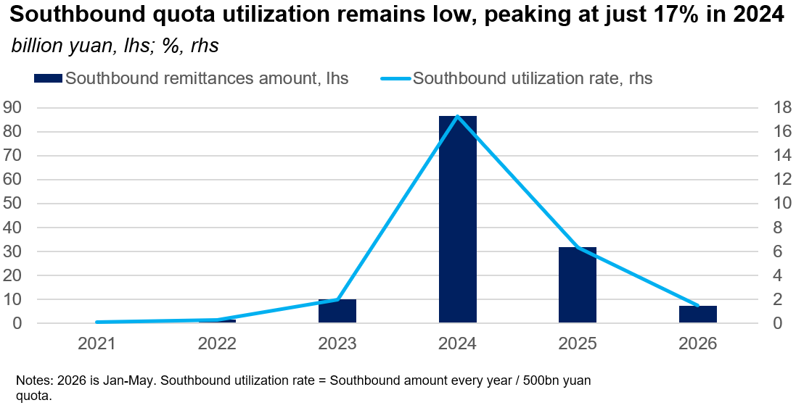
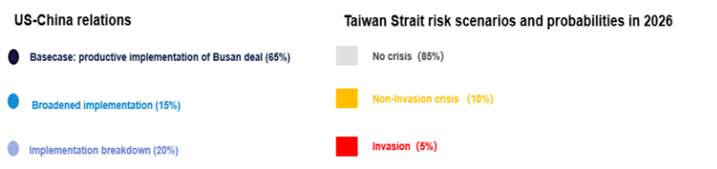

-
Foreign Policy: Missile test was likely a long-planned deterrent signal
-
Economic Policy: Beijing deepens Hong Kong’s offshore yuan ecosystem to accelerate internationalization
-
Politics: Political loyalty is the main selection criterion for the military high command
-
United States/China: Beijing’s recent goodwill gestures will reinforce its confidence in maintaining stable US relations
-
Taiwan: China’s coast guard will likely conduct more frequent patrols in waters close to Taiwan
- Standing calls
- Upcoming Events
Foreign Policy
Missile test was likely a long-planned deterrent signal. On 6 July, China launched a submarine-based ballistic missile with a dummy warhead into the South Pacific—the first of its kind in international waters. The test was almost certainly planned well in advance and was designed to demonstrate that China can carry out a long-range submarine-based missile strike in the Pacific. Still, the specific timing would have been at Beijing’s discretion and was likely tied to the signing of the Australia-Fiji “Ocean of Peace” pact.
- The test could prompt Pacific countries to expand joint training and increase defense spending. Beijing called the test "routine annual military training" and said relevant countries had been notified in advance. Australia, New Zealand, Japan, and Papua New Guinea, each of which received notice, said they were informed only hours beforehand. Many in the region are likely to interpret the test as an attempt by China to signal intimidation.
- Fiji’s first-ever mutual-defense pact elevates the country to the status of a formal treaty ally of Australia. Australia’s Foreign Minister Penny Wong criticized the missile test, though she declined to directly link it with the signing of the pact. The NATO summit in Ankara was unlikely to have influenced the timing, as China was not the primary focus of the event.
- Beijing could proceed with additional testing to demonstrate its capabilities. The test marks the first public indication that China can execute a complete end-to-end sea-based nuclear strike. Beijing could eventually follow up by conducting an air-based missile test.
Economic Policy
Beijing deepens Hong Kong’s offshore yuan ecosystem to accelerate internationalization. On 7 July, People’s Bank of China Governor Pan Gongsheng announced a package of measures at the Hong Kong FIC & Bond Connect Summit. The most substantive of these expands the Hong Kong Monetary Authority’s yuan liquidity facility to 500 billion yuan from 200 billion, with maturities of up to three years. The move should lead to cheaper, more stable offshore yuan financing to support Hong Kong banks’ lending to clients in Southeast Asia, the Middle East, and Europe. The package also expands the Southbound Bond Connect by raising its annual quota to 800 billion yuan and adding offshore yuan bond futures and gold-clearing capabilities.
- Beijing is signaling sustained state backing for Hong Kong’s existing financial links with mainland China. The package includes a larger yuan business funding facility for local banks, more Chinese foreign exchange reserve activity in Hong Kong, and the launch of offshore yuan government bond futures (see: Brokerage crackdown will leave formal China-Hong Kong capital channels intact, 17 June 2026).
- Together, these steps cement Hong Kong's status as the premier offshore yuan funding hub. The measures should increase yuan use in trade invoicing and hedging and could facilitate global currency diversification away from the US dollar.

Politics
Political loyalty is the main selection criterion for the military high command. After purges weakened the top ranks, President Xi Jinping has begun promoting officers to fill key vacancies in the military’s command structure. In recent public remarks and personnel moves, Xi has tied political loyalty, ideological discipline, and anticorruption work to combat effectiveness. That suggests Beijing still sees a politically reliable force as the foundation for military readiness and that the leadership remains concerned about cohesion within the People’s Liberation Army (PLA), including in any future high-risk operation such as a move against Taiwan.
- Xi’s 1 July speech reaffirmed the political emphasis. He called for the full implementation of his military-strengthening doctrine and urged the party to uphold absolute leadership over the armed forces. In Xi’s view, military modernization depends first on unity around the party center.
- The 3 July promotions showed that Xi is also rebuilding senior leadership. Since the current Central Military Commission (CMC) took office in 2022, its seven-member roster has effectively fallen to two active members, including Xi, after a series of removals. The promotion of Zhang Shuguang, who heads the CMC’s discipline and supervision bodies, strengthens the enforcement arm of military control. It could also position Zhang for further advancement to the CMC next year.
- A PLA Daily article offered the strongest sign of the leadership’s concerns. Its warnings against wavering political commitment, complacency, privilege, and falsehood suggested concern not only about corruption, but also about the reliability of senior officers. That warning points to further ideological realignment inside the PLA as Xi tries to ensure that loyalty produces a force he considers fit to fight.
United States/China
Beijing’s recent goodwill gestures will reinforce its confidence in maintaining stable US relations. Authorities released Chinese preacher Ezra Jin following a personal request from President Donald Trump during the May summit. Separately, China made the largest US soybean purchase since last November. China’s Ministry of Commerce also announced that both sides would reduce tariffs on selected agricultural goods, signaling incremental progress under the bilateral Board of Trade framework.
- US arms sales to Taiwan remain the most significant risk factor ahead of Xi’s anticipated visit to the US in September. During a 30 June call with US Secretary of State Marco Rubio, Chinese Foreign Minister Wang Yi warned that even “a slight move” on Taiwan could “affect the whole situation.” This comment suggests that Beijing expects Washington to refrain from advancing any component of a Taiwan arms package, at least through the summit period.
- Risks to bilateral stability posed by the US Congress have temporarily receded. Efforts to incorporate stricter China-related export controls into the National Defense Authorization Act (NDAA) stalled following a House floor vote on 30 June. Republican divisions over the SAVE Act, rather than opposition to the China-related measures themselves, drove the outcome. Nonetheless, broad export control provisions in the final NDAA will face opposition from corporate lobbying and anticipated White House resistance.
Taiwan
China’s coast guard will likely conduct more frequent patrols in waters close to Taiwan. China’s coast guard announced on 4 July that its vessels conducted routine patrols in the waters east of Taiwan and that it referred to such waters as “under China’s jurisdiction.” This is the latest indication that Beijing aims to increase de facto control over waters around Taiwan to justify its territorial claim over the island. The activity followed a maritime environmental survey in the same area two weeks earlier and came less than a month after a special law enforcement operation conducted from 6–8 June (see: Beijing will tighten control over waters east of Taiwan, 25 June 2026).
- A state media commentary cited coast guard activities around the Diaoyu (Senkaku) Islands, which China disputes with Japan, as an example of what routine patrols could look like. The article said that the coast guard patrolled around the Diaoyu (Senkaku) Islands for 357 days in 2025.
- Washington is unlikely to retaliate against this increased activity around Taiwan. The patrols do not involve any Chinese military vessels. Trump’s remarks on Taiwan in May indicated that he perceives the island as leverage in maintaining the truce with Beijing and is uninterested in showing public support for Taiwan.
- Taipei does not have an effective solution to deter routine Chinese patrols. Taiwan’s coast guard condemned the latest patrol as “power-grabbing” and said Taiwanese ships should ignore any demands for boarding inspections by Chinese vessels.
Standing calls

Notes underpinning calls:
April summit will yield new purchase commitments and maintain truce, 5 February 2026
Latest dismissals deepen military turmoil and lower Taiwan risk, 26 January 2026
Upcoming Events
- Late July: Conclusion of US 301 investigations (Section 122 tariffs expire 24 July)
- Last week of July: CCP Politburo will discuss the economy
- Early August: CCP leadership will have its annual summer retreat at Beidaihe
- 12-13 September: BRICS Summit
- 24 September: Xi will likely visit the US
- 22-29 September: UN General Assembly high-level meetings
- 27 September: Six-month deadline for China’s trade investigations
- 1-7 October: China’s National Day/Golden Week
- 10 October: Taiwan’s National Day
- 21-23 October: Bund Summit in Shanghai (estimated dates)
- 10 November: End of one-year suspension of US–China tariffs, Bureau of Industry and Security 50% ruling, Chinese export controls, port fees
- 18–19 November: APEC summit in Shenzhen
- 28 November: Taiwan local elections
- 14–15 December: G20 leaders’ summit in Miami